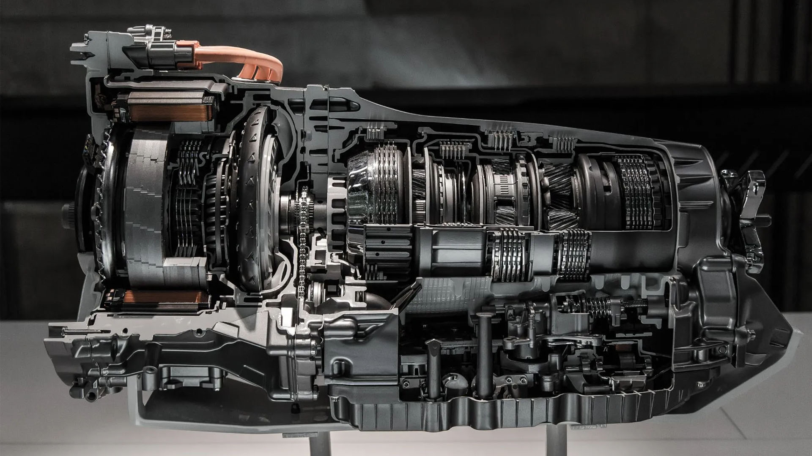
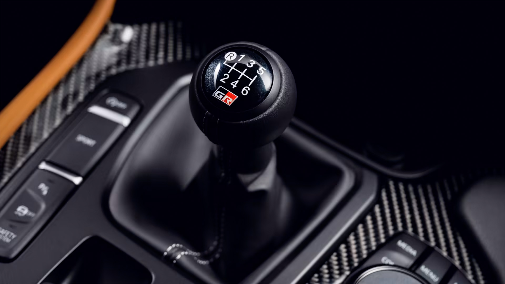

TRANSMISSION
Transmission Types
In a car, a transmission is a mechanical component that plays a crucial role in controlling the power generated by the engine and transmitting it to the wheels. It manages the speed and torque of the vehicle by providing various gear ratios, allowing the car to operate efficiently across a range of speeds.
AUTOMATIC
1. Automatic Transmission : Fully automatic transmission that shifts gears without driver intervention. Utilizes a torque converter to transmit power between the engine and transmission. Characteristics: Cost-effective, combines manual control with automatic convenience.

*Torque Converter: Transfers power from the engine to the transmission using fluid coupling instead of a direct mechanical link. Commonly used in automatic transmissions*
2. Automated manual gearbox: A type of manual transmission with automated clutch and gearshift control. Allows for both automatic and manual shifting without a clutch pedal. Characteristics: Cost-effective, combines manual control with automatic convenience
3. Dual-clutch automatic gearbox: Utilizes two clutches to engage and disengage gears. Allows for seamless and quick gear changes, providing a smoother driving experience. Characteristics: Faster shifts, improved fuel efficiency, common in performance vehicles.
4. Electric car automatic transmission: Electric cars typically don't have traditional transmissions with gears. Instead, they use a single-speed transmission or direct-drive system. Characteristics: No gear shifting, instant torque delivery, simplified drivetrain.
5. IMT (Intelligent Manual Transmission): Similar to AMT but with additional features. Allows manual control without a clutch pedal and provides features like auto-rev matching. Characteristics: Enhanced driver control, smoother shifts compared to traditional AMT.
6. CVT (Continuously Variable Transmission): Utilizes a pulley system to provide an infinite number of gear ratios. Offers a continuous range of gear ratios without distinct steps. Characteristics: Smooth acceleration, fuel efficiency, and adaptable performance to driving conditions.
MANUAL
Transmission type which requires driver intervention for gear shifting using a manually operated clutch and gearshift. The driver selects and engages gears based on vehicle speed and driving conditions. Characteristics: Direct driver control, mechanical engagement of gears, potentially more engaging driving experience.